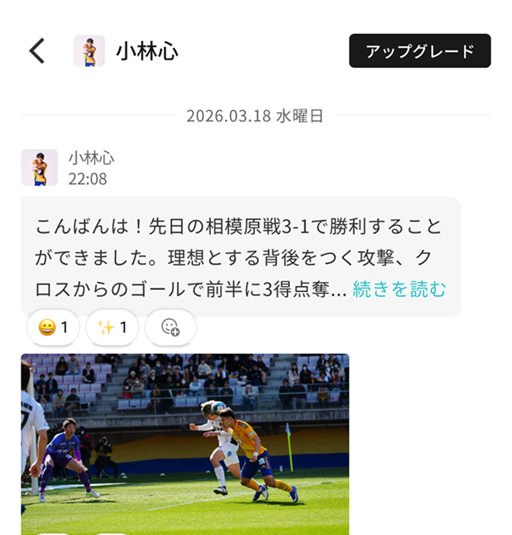
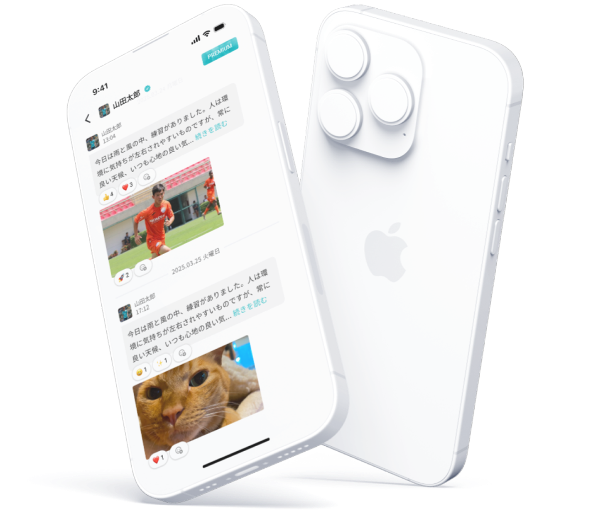
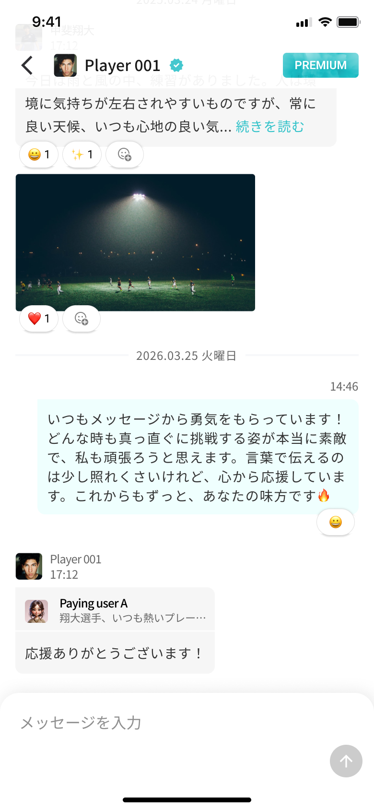
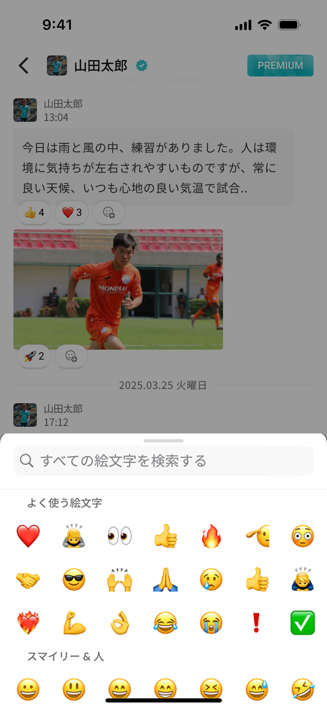
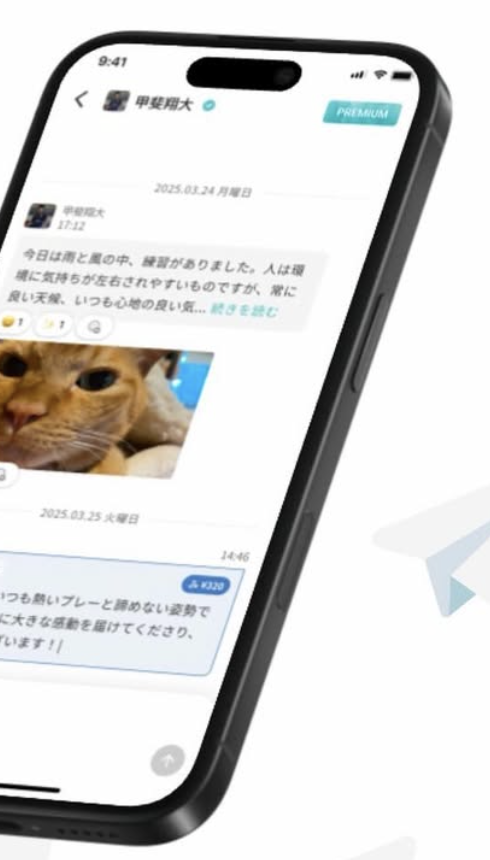
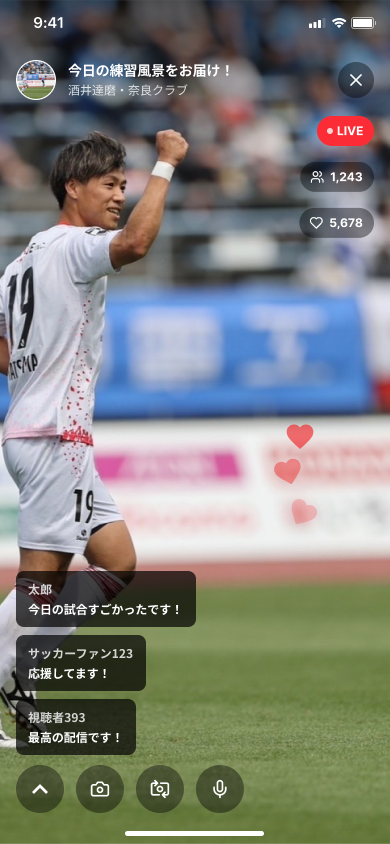
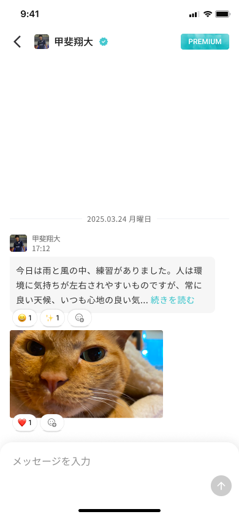

選手から届く本音を
読めるタイムライン
選手から届く本音や想いのメッセージを読めます。初月2通までは無料で受け取れます。
Beyond
The Sports
scroll / drag
See more Athletes Archive Website

© 2026
TOKYO, JP--:-- --
ドラッグして、選手を探す
勝った日も、うまくいかない日も、
選手の人生を応援できる場所。
Scroll
Beyond
The Sports
勝った日も、うまくいかない日も、
選手の人生を応援できる場所。

機能紹介

選手から届く本音や想いのメッセージを読めます。初月2通までは無料で受け取れます。

あなたの言葉を、選手本人へ直接届けられます。1メッセージにつき3通まで送信できます。

共感の気持ちを、ワンタップでやさしく届けられます。PREMIUMでは無制限に送れます。

ひとことでは足りない想いを、手紙のかたちで。届いた言葉は選手のもとに残ります。

試合の前後、練習のあと。編集されていない時間を、その場で一緒に過ごせます。

PREMIUMプランでDM機能が解放されます。返信の有無や頻度は選手によって異なります。
機能紹介
New feature
気持ちをのせた特別なメッセージを、金額を選んで届けられます。選手のタイムラインに、あなたの言葉がそのまま残ります。
 New feature
New feature
選手のライブ配信をリアルタイムで観て、コメントを送れます。試合の前後も、練習の合間も、同じ時間を共有できます。
Everyday
選手から届くメッセージを読み、言葉やリアクションで返せます。日々のやりとりが、そのまま応援になります。
サッカー・フットサルを中心に、58名の選手が発信しています。
まずは無料で、はじめられます。
Movie
UPSTARがどんなアプリか、90秒で。
UPSTAR OFFICIAL PV｜「応援の一声」篇（Full Ver.）
UPSTARアプリの使い方や楽しみ方を、noteでわかりやすくご紹介しています。
利用ガイドを見る
A.いいえ、PREMIUMプランは加入した日から閲覧できる仕組みです。そのため、加入日以前の過去投稿は閲覧できません。気になる選手の発信を継続して受け取りたい方は、早めのご加入がおすすめです。
A.いいえ、返信は必ず来るものではありません。PREMIUMプランでは選手にメッセージを送ることができますが、返信の有無や頻度は選手によって異なります。あらかじめご了承ください。
A.はい、読むだけでも楽しめます。UPSTARは、まず選手からのメッセージを受け取って楽しめるアプリです。また、PREMIUMプランではリアクション機能も使えるため、いきなりメッセージを送らなくても気持ちを届けることができます。